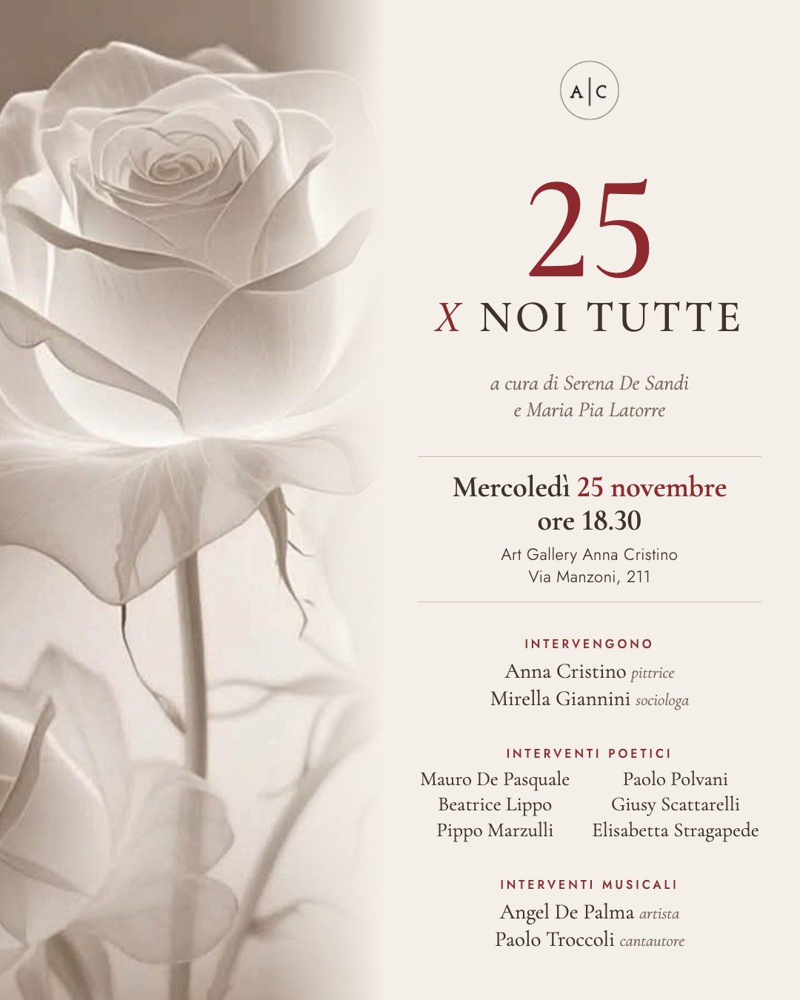

Art Gallery Anna Cristino Cuore e Arte
Quadri in acrilico su tela e spatola della pittrice Anna Cristino: volti di donna, emozioni, marine e astratti, da vedere dal vivo a Bari. La galleria è stata inaugurata il 12 novembre 2026.
25 X Noi Tutte
Mercoledì 25 novembre 2026, ore 18.30Art Gallery Anna Cristino · Via Manzoni 211, Bari
Il 25 novembre, Giornata internazionale per l’eliminazione della violenza contro le donne, la galleria ospita una serata di parole, poesia e musica tra le tele di Anna Cristino, a cura di Serena De Sandi e Maria Pia Latorre.
- Intervengono
- Anna Cristino, pittrice · Mirella Giannini, sociologa
- Interventi poetici
- Mauro De Pasquale · Beatrice Lippo · Pippo Marzulli · Paolo Polvani · Giusy Scattarelli · Elisabetta Stragapede
- Interventi musicali
- Angel De Palma, artista · Paolo Troccoli, cantautore
Una galleria d’arte a Bari, in Via Manzoni 211
Art Gallery Anna Cristino – Cuore e Arte è la galleria d’arte della pittrice Anna Cristino, in Via Alessandro Manzoni 211, a Bari. L’ha fondata l’artista stessa, che ne è anche la titolare, e l’ha inaugurata giovedì 12 novembre 2026.
Qui le tele si vedono dal vivo: il colore materico, quasi pulsante, rende ciò che una fotografia non restituisce. Per conoscere le opere in esposizione, i prezzi o chiedere una visita si parla direttamente con l’artista.
Volti, emozioni, marine e astratti
Al centro la donna, simbolo di forza interiore, resilienza e bellezza. Intorno, il colore: il rosso è una presenza costante.
Acrilico, spatola e mani: il colore diventa materia.
Anna Cristino dipinge a strati densi, con la spatola e con le mani, fino a rendere il colore materico e quasi pulsante.

Anna Cristino, pittrice a Bari
Anna Cristino è nata a San Severo, in provincia di Foggia, nel 1964 e vive a Bari. Ha scoperto la pittura da bambina, guardando lavorare il padre, disegnatore. Oggi dipinge soprattutto la donna come simbolo di forza interiore, resilienza e bellezza.
Per lei la pittura è una «culla d’Amore»: un abbraccio emotivo e sensoriale per chi guarda l’opera e vi si riconosce.
«figure femminili eleganti, che emergono ed esaltano l’essere Donna»
Vittorio Sgarbi
Vieni a vedere le tele dal vivo
Per visite, opere e informazioni chiama la galleria o scrivi all’artista. Gli orari di apertura non sono ancora indicati.